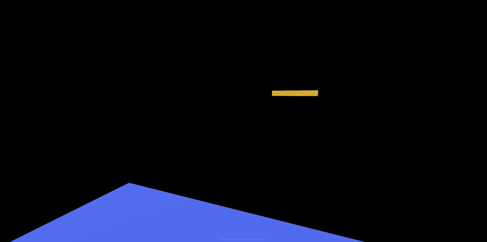
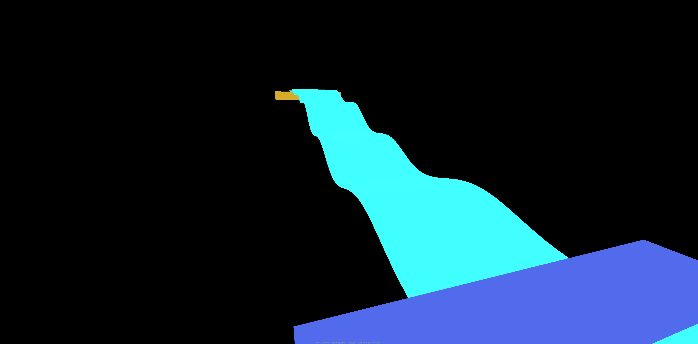
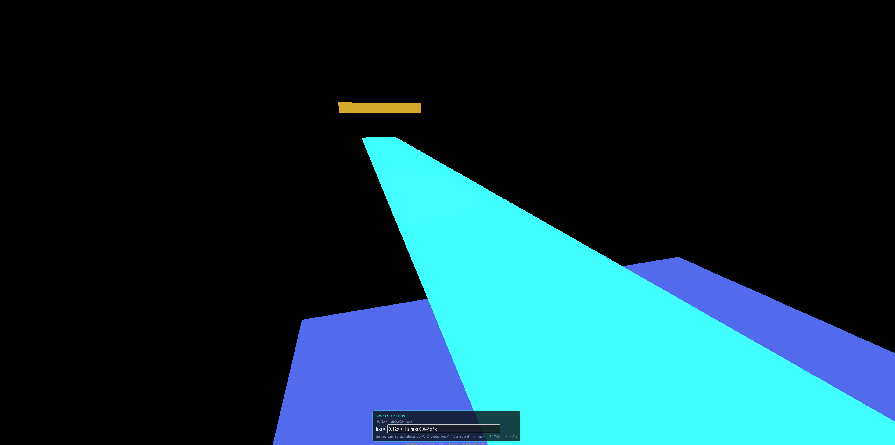
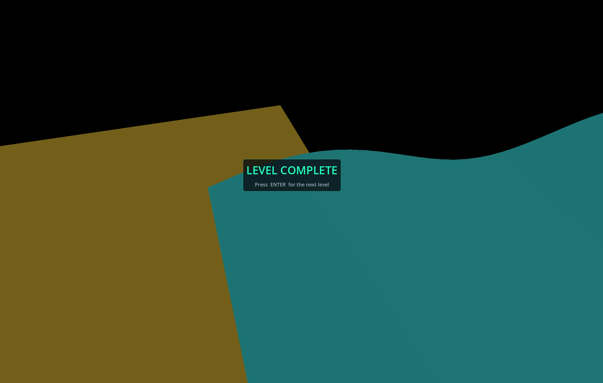

MathVoid is a game I'm working on in the Godot engine. The premise of the game is
you start in a void on a platform. There will also be a random platform somewhere else.
You use T to open the console and insert math equations. Those equations then get drawn
into walkable paths.
The Void
The whole level is just empty black space. You get one platform to stand on and another one across a gap. That is it! The exit sits higher than where you start, so a flat line will not get you there.
Before Graphing
Where you start and where you need to get to. Nothing in between!

Press T to open the console, type a function, hit Enter. The game takes what you typed and turns it into a bunch of points, builds a mesh out of those points, then sticks collision on it. That is the whole loop! Type it, then stand on it.
I'm still very new to programming and learning a lot but the core mechanics do function! I'm working on adding more levels and features!
Level 1 Solved
This one is 2/(1+exp(-0.6*x)) + sin(2*x)/6. It starts flat, ripples up through the middle and flattens back out right at the yellow exit. My favorite one so far!

Controls
Keyboard and Mouse
These are all hard coded right now. Rebinding them is on my list!
Input
Action
WASD
Move
Mouse
Look
Space
Jump
T
Open the equation console
Enter
Graph the function you typed
Esc
Close the console and release the mouse
Solving Level 1
Walk to the edge and look across the gap.
Press T to open the console.
Type a function that goes UP as x gets bigger.
Hit Enter and the curve shows up as a solid surface.
Walk out onto it and follow it to the exit!
Every new equation replaces the old one, so you can mess around as much as you want.
Equations That Work
0.12*x + 1 a sloped line
0.04*x*x a parabola
sin(x) + 1 a wave
All three of these will get you to the exit.
The Equation Console
The console pops up at the bottom. That little row underneath it is every function it will accept.

Reaching The Exit
Step onto the yellow platform and that is the level done!

Dev Log
Level editor
Posted
Before I was using coordinates to place platforms which was messy and annoying.
I've added a new system that allows me to place them in a sort of creative mode!
This makes the process much much easier!
The Grapher never changes when you add new math. A line, parabola, and sine wave all just produce a different list of points fed into the same mesh builder.
So adding a new level barely costs me anything now. The sampling changes but the mesh code stays put!
Next up is a HUD, and after that I want to try full 3D surfaces where you graph z as a function of x and y instead of just one curve.
Hopefully this will allow people to make even crazier designs and paths.
Glossary
Void
The empty black space everything floats in. There is no ground unless you make it!
Grapher
The script that takes your typed text, turns it into points, then turns those points into a mesh.
Mesh
The actual 3D shape you end up seeing on screen.
Collision
The invisible shape that stops you falling straight through the mesh. Without it the curve is just a picture!
Domain
The range of x values the game samples. Smaller domain means a shorter bridge.